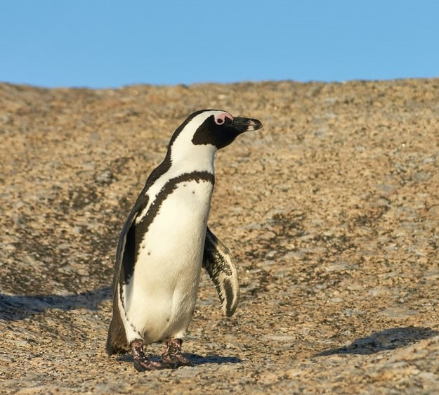

ペンギンの生態
ペンギン目ペンギン科の鳥の総称。体色はふつう背面が黒、腹面が白で、脚が短く、直立して歩く。 翼はひれ状で飛ぶことはできず、巧みに泳ぎ、魚や動物プランクトン、イカなどを捕食する。南半球に分布し、南極・亜南極の沿海に多い。非常に人懐こく社交的。
ペンギンの謎
ペンギンは生涯の7割以上を海で過ごす。陸に上がってくるときは、羽毛の生え変わり時期と、子育てのときのみ。故にまだまだ謎が多い
ペンギンの種類
19種存在する。最大種はエンペラーペンギンで130㎝ほど。最小種はコガタペンギンで体長は約40cm。キガシラペンギンはペンギン全種のなかでも特に希少で絶滅の危機にある種の1つ。 長崎県にある『長崎ペンギン水族館』は世界一ペンギンの種類が多い水族館。9種類（コガタペンギン、ジェンツーペンギン、キングペンギン、ケープペンギン、ヒゲペンギン、フンボルトペンギン、イワトビペンギン、マカロニペンギン、マゼランペンギン）を飼育している世界でも珍しいペンギンを中心とした水族館である。
-
エンペラーペンギンは最も大きいペンギン。約130㎝
-
アデリーペンギン。suicaのキャラクターにもなっている。
-
イワトビペンギン。目の上に眉のような黄色の羽毛があるのが特徴。
- 
ジェンツーペンギン。最も速く泳ぐペンギンとされている。
-
キングペンギン。外見が大人と子供で違うペンギン
-
コガタペンギン。最も小さく最も古いペンギン